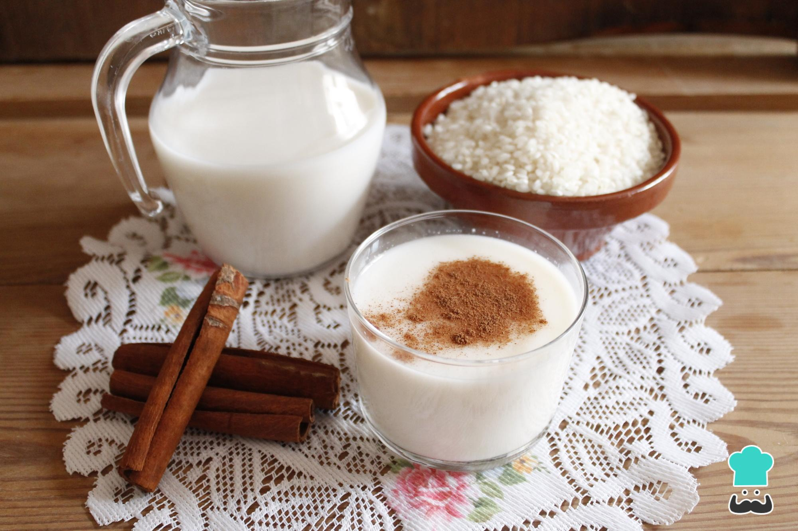

Postres
Postre de limón
La combinación de ese toque ácido que tiene el limón con el sabor dulce que caracteriza a los postres, ha convertido a esta mezcla en una de las preferidas para grandes y pequeños.
Ingredientes:
- 1 lata de leche condensada
- 1 lata de crema de leche
- 3 limones (zumo y ralladura)
- 1 paquete de galletas Ducales
- 1 sobre de gelatina sin sabor
Paso a Paso:
- Licuamos la Crema de leche, la leche condensada, la gelatina sin sabor y el zumo de los 3 limones.
- Rallamos tres limones.
- En el molde donde vamos a colocar la mezcla, colocamos dos capas de galletas Ducales.
- Colocamos la mezcla encima de las galletas y agregamos la ralladura de los limones.
- Llevamos la mezcla al refrigerador de 2 a 4 horas.
Platos Principales
Ceviche de Pescado
Un plato fresco y delicioso, ideal para los amantes de los sabores cítricos y marinos.
Ingredientes:
- 500 g de pescado blanco fresco (corvina, tilapia o merluza)
- 1 taza de jugo de limón
- 1 cebolla morada, cortada en julianas finas
- 1 ají o chile picado finamente (opcional)
- 1/2 taza de cilantro fresco picado
- Sal y pimienta al gusto
- 1 taza de maíz tostado o cancha (opcional, para acompañar)
Paso a Paso:
- Corta el pescado en cubos pequeños y colócalos en un recipiente de vidrio o acero inoxidable.
- Vierte el jugo de limón sobre el pescado hasta cubrirlo completamente. Deja reposar en el refrigerador por 15-20 minutos para que el pescado se "cocine" con el ácido del limón.
- Mientras tanto, enjuaga la cebolla morada con agua fría para suavizar su sabor y escúrrela bien.
- Agrega la cebolla, el ají picado (si lo deseas), el cilantro, la sal y la pimienta al pescado marinado. Mezcla suavemente para combinar los sabores.
- Sirve el ceviche frío, acompañado de maíz tostado o cancha, y disfruta de este plato fresco y delicioso.
Bebidas

Agua de Horchata
Una bebida refrescante y tradicional, perfecta para acompañar cualquier comida.
Ingredientes:
- 1 taza de arroz
- 1 rama de canela
- 4 tazas de agua
- 1 taza de leche
- 1/2 taza de azúcar (ajustar al gusto)
- 1 cucharadita de extracto de vainilla
- Hielo al gusto
Paso a Paso:
- Enjuaga el arroz con agua fría para eliminar el exceso de almidón.
- En un recipiente, mezcla el arroz con la rama de canela y 2 tazas de agua. Deja reposar durante al menos 4 horas o toda la noche.
- Licúa la mezcla de arroz y canela con el agua de remojo hasta obtener una textura suave.
- Cuela la mezcla con un colador fino o una tela para eliminar los sólidos.
- Agrega la leche, el azúcar y el extracto de vainilla al líquido colado. Mezcla bien.
- Sirve en un vaso con hielo y disfruta de esta deliciosa bebida refrescante.